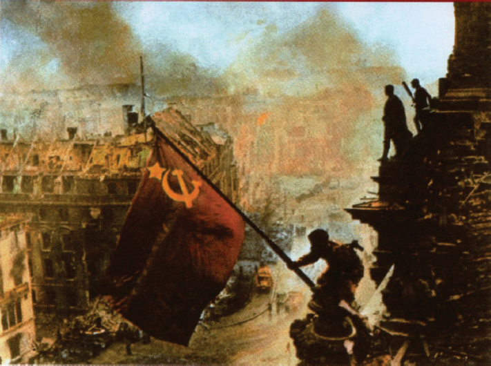

Time, vol. 143, n. 23, June 6, 1994.
“O homem que venceu Hitler”: edição especial da revista
Time em comemoração aos 50 anos do “Dia D”. Na capa,
a foto do general Dwight D. Eisenhower, comandante das
tropas norte-americanas na Operação Overlord.

Yevgeny Khaldei/AKG Berlim/LatinStock
Um soldado soviético ergue a bandeira da URSS no
telhado do Reichstag (Câmara dos Deputados da Alemanha),
em Berlim, em 2 de maio de 1945. Foto colorizada.
Após apresentar as imagens, o professor introduziu o debate acerca das disputas entre Estados Unidos e União Soviética sobre a memória da 2a Guerra Mundial. Com base na análise das imagens e no encaminhamento sugerido pelo professor, conclui-se que:
Estão corretas APENAS as afirmativas